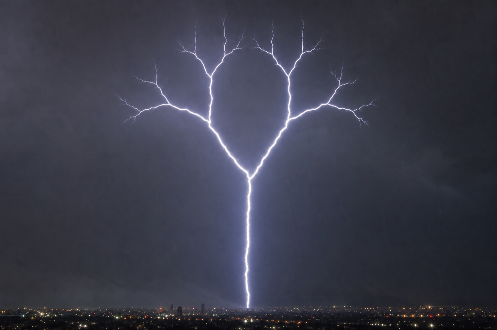
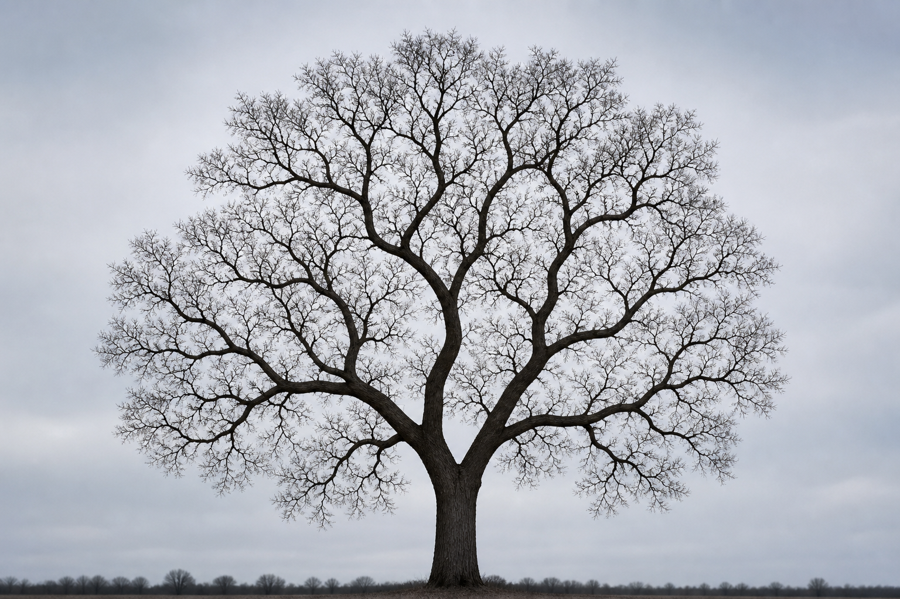
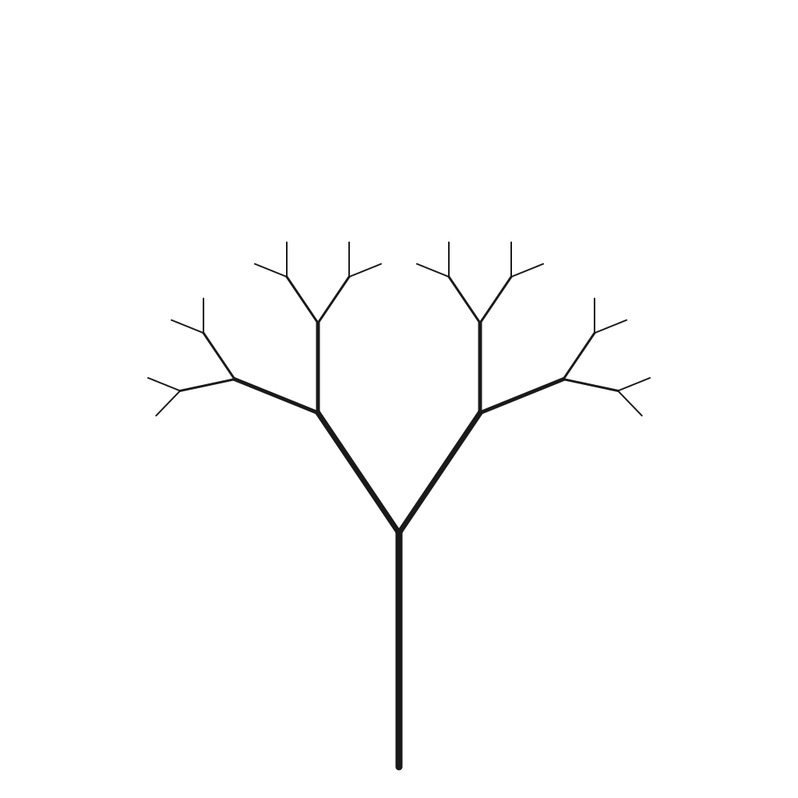
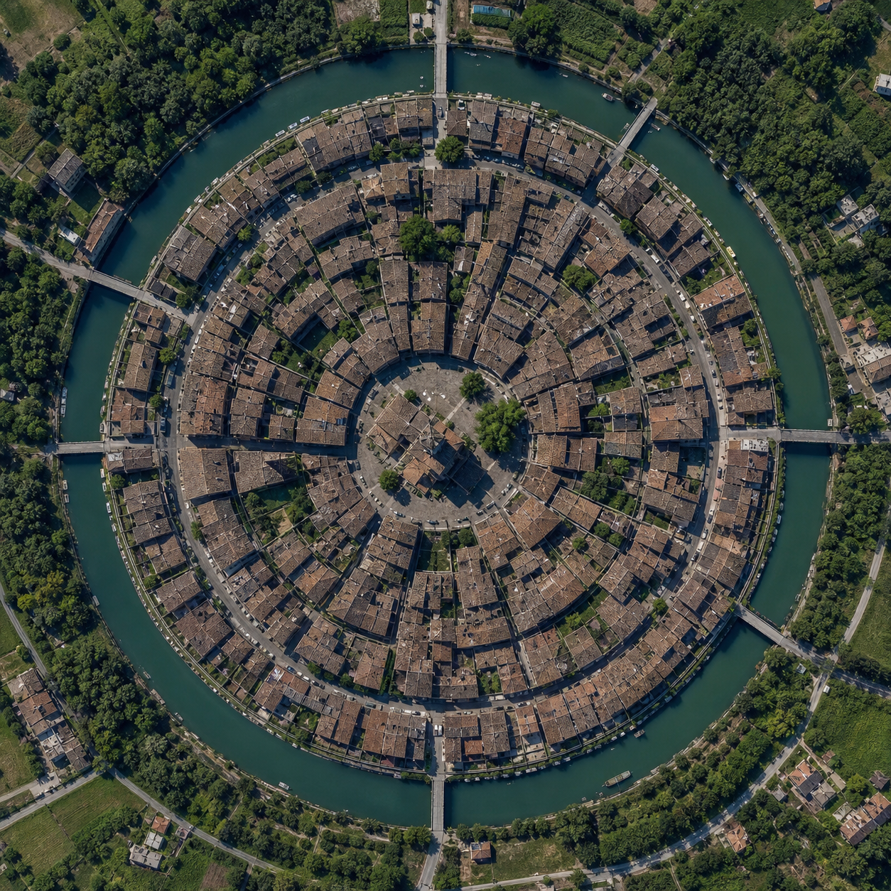
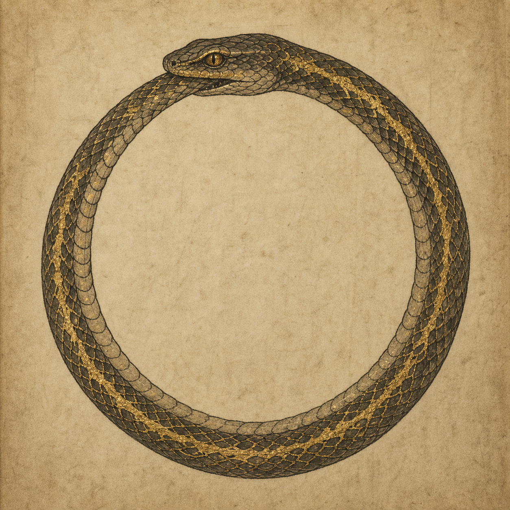
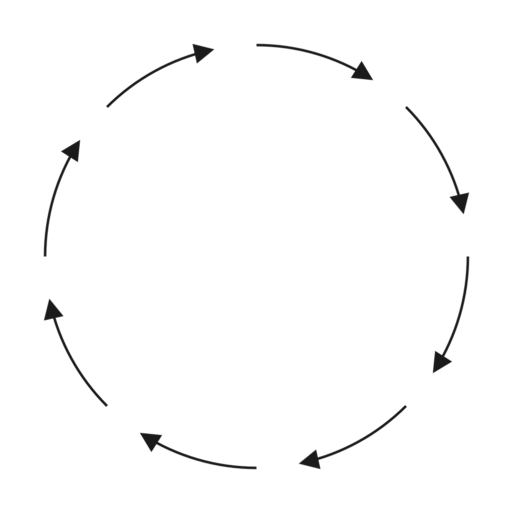

See a scene, grasp a structure.
A benchmark of abstract structures, in the spirit of Gödel, Escher, Bach. The unit is a structural motif — self-reference, recursion, nesting, cycle — not any particular graph: node counts, depths and angles are nuisance variables. Each motif speaks with several voices: a folk-tale shaped like it, an equation fixed by it, and natural or artistic images whose composition is the structure — a vis-graph skeleton is used as the reference for scene generation, so you look at a landscape and the structure dawns on you.
$$s = T(s)$$
invariant: the whole appears, unchanged, inside itself
《蓝布纸灯》 染坊 · gpt-5.5 · screened ✓
水桥镇有个蓝布染坊，阿柳夜里守缸。风吹来一盏纸灯，灯面湿亮，写着水桥镇有个蓝布染坊，阿柳夜里守缸。风吹来一盏纸灯，灯面湿亮，写着这篇小故事。阿柳不敢吹灭，只把灯挂在梁上，天亮还微微发蓝。
In Waterbridge town stood a blue-dye house. A-Liu watched the vats at night. The wind brought a paper lantern, damp and shining. On its side was written this very tale. A-Liu did not dare snuff it out. He hung it from the beam, and by dawn it was still glowing blue.
why this shape — 故事中的纸灯内容被设定为故事本身，形成 s = T(s) 的不动点形态。
[domain: 民间口传]
从前有座山，山里有座庙，庙里有个老和尚，正在给小和尚讲故事。他讲的是：从前有座山，山里有座庙，庙里有个老和尚，正在给小和尚讲故事……
[domain: same structure · English]
Once upon a time there was a mountain; on the mountain, a temple; in the temple, an old monk telling a young monk a story. The story was: once upon a time there was a mountain…
The story is a fixed point of its own telling:
$$s = T(s), \qquad f(x) = x.$$
There is no base case and no bottom level. The structure is the whole appearing, unchanged, inside itself.
{
"motif_id": "self_reference",
"name": "Self-reference — the thing contains itself",
"equation": "s = T(s)",
"invariant": "the whole appears, unchanged, inside itself",
"nuisance_variables": [
"visible nesting levels",
"medium",
"domain"
]
}nuisance (deliberately varied, never scored): visible nesting levels, medium, domain
$$T = \operatorname{Node}(T,\dots,T)$$
invariant: every branch, looked at alone, has the same shape as the whole



《糖树春灯》 糖画 · gpt-5.5 · screened ✓
腊月里，阿槐在灶前熬糖。铜勺一抖，糖线落在石板上，成了一棵亮晶晶的糖树。每根枝上又托着小糖树，小糖树的枝头还生着更小的糖树。孩子们围着看，灯火一照，满板都是甜香的春天。
In the last cold days of the year, Old Huai boiled sugar by the stove. He tipped his brass spoon, and a shining tree ran out across the stone. On each bough stood a smaller sugar tree, and on those boughs grew smaller ones still. The children bent close. In the lamplight, the whole board smelled of spring.
why this shape — 整体糖树由若干同形的小糖树组成，每个小糖树又由更小的同形部分构成，体现 T = Node(T, …, T)。
[domain: 河与支流]
问大河：你从哪里来？大河说：我由几条小河汇成。问其中一条小河，它说：我也是一条河，也由更小的河汇成。再问下去，答案永远一样——每一条河，都是由和它一样的东西组成的。
[domain: same structure · English]
Ask the great river where it comes from, and it answers: from smaller rivers. Ask any of those, and it gives the same answer. However far you go, the answer never changes — each river is made of things shaped exactly like itself.
A recursively defined object — the type on the left appears, unchanged, on the right:
$$T = \operatorname{Node}(T,\dots,T).$$
Unrolling the equation gives the same branching shape at every scale. How many children, how deep, at what angle — all irrelevant: the structure is that the part repeats the whole.
{
"motif_id": "recursion",
"name": "Recursive branching — the part repeats the whole",
"equation": "T = \\operatorname{Node}(T,\\dots,T)",
"invariant": "every branch, looked at alone, has the same shape as the whole",
"nuisance_variables": [
"depth",
"branching factor",
"angles",
"scale ratio",
"domain"
]
}nuisance (deliberately varied, never scored): depth, branching factor, angles, scale ratio, domain
$$S_\lambda(X) = X$$
invariant: inside each layer sits a smaller copy of the same layer
《酱缸灯》 酱缸 · gpt-5.5 · screened ✓
青瓦镇的阿满替娘看酱缸。夜里缸盖轻响，他揭开一看，酱香里立着一只小酱缸，黑亮亮，连缺口也像家里那只。他弯腰钻进缸口，又见更小的缸，温温地冒着豆香。阿满不怕，只把袖里的盐撒下去，最深处便亮起一盏芝麻油灯，照见一碗热饭。
In Qingwa, young Aman watched his mother's bean crock. That night the lid gave a soft knock. He lifted it, and in the warm smell stood a little crock, dark and glossy, with the same chipped lip. Aman bent and slipped inside. There waited a smaller crock, breathing bean-sweet steam. He scattered the salt from his sleeve, and far within, a sesame-oil lamp woke beside a bowl of hot rice.
why this shape — 通过打开并进入酱缸，内部出现缩小的同类酱缸，体现缩放不变的嵌套容器形。
[domain: 环城]
这座古城有一圈城墙。走进城门，里面还是一座城，有自己的一圈城墙；再走进去，还是一座城。城里有城，墙里有墙，一直到最中心的一座小小的宫殿。
[domain: same structure · English]
The ancient city has a wall. Pass through the gate, and inside is another city with its own wall; pass through again, another still. City within city, wall within wall, down to one small palace at the very center.
One scaling map carries every layer onto the next, and the whole pattern onto itself:
$$S_\lambda(X) = X, \qquad 0 < \lambda < 1.$$
How many rings there are, how far apart — irrelevant: the structure is the same form, containing itself.
{
"motif_id": "nesting",
"name": "Nesting — the same form inside itself, at every scale",
"equation": "S_\\lambda(X) = X",
"invariant": "inside each layer sits a smaller copy of the same layer",
"nuisance_variables": [
"number of layers",
"spacing",
"exact shape",
"domain"
]
}nuisance (deliberately varied, never scored): number of layers, spacing, exact shape, domain
$$v \leadsto v$$
invariant: there is no first element: the end feeds the beginning



《青缸蓝布》 染布 · gpt-5.5 · screened ✓
青石镇有个染匠阿柳，缸里的蓝水总不败。要养蓝水，得添灶灰水；灶灰水要烧干草才香；干草又爱裹着旧蓝布引火，布上落的蓝，正是那缸里染出的。阿柳不问头，只在晨雾里翻布，满院像落了晴天。
In Greenstone town, Willow the dyer kept a vat that never lost its blue. To feed it, she poured in ash water. For good ash, she burned sweet dry grass. The grass caught best when wrapped in scraps of old blue cloth, and those scraps had taken their color from the very vat. Willow never asked what came first. At dawn she lifted the cloth, and the yard looked full of sky.
why this shape — 靛缸的蓝来自灰水，灰水来自烧草，烧草靠旧蓝布引火，旧蓝布又来自靛缸染成，形成因果闭环。
[domain: 鸡与蛋]
鸡从蛋里孵出来。蛋是鸡下的。那第一只鸡呢？——从蛋里孵出来。那第一个蛋呢？——是鸡下的。这个问题绕了一圈，回到了它自己开始的地方。
[domain: same structure · English]
The hen hatches from the egg; the egg is laid by the hen. Then where did the first hen come from? From an egg. And the first egg? From a hen. The question walks in a circle and arrives back exactly where it began.
Follow the arrows and you return to your starting point:
$$v_0 \to v_1 \to \dots \to v_n \to v_0, \qquad v \leadsto v.$$
How many steps the loop has, what the elements are — irrelevant: the structure is closure: the end feeds the beginning.
{
"motif_id": "cycle",
"name": "Cycle — following the arrows leads back to the start",
"equation": "v \\leadsto v",
"invariant": "there is no first element: the end feeds the beginning",
"nuisance_variables": [
"length of the loop",
"what the elements are",
"domain"
]
}nuisance (deliberately varied, never scored): length of the loop, what the elements are, domain
σ(x) = x（镜像不变）
《盐田月亮》 晒盐 · gpt-5.5 · screened ✓
白沙滩的盐田醒得早。阿水站在岸边，阿青站在潮边。日头一升，阿水把盐花往海那头推，阿青把盐花往岸这头推；阿水收起弯耙，阿青也收起弯耙。中间的白埂慢慢鼓起，像月亮落在田里。晚风来时，满村的汤都有了味。
The salt pans of White Sand woke before the gulls. Ashui stood by the bank, Aqing by the tide. When the sun lifted, Ashui pushed the young salt seaward, and Aqing drew the young salt shoreward. Their bent rakes rose together. Along the middle ridge the whiteness swelled, round and quiet as a fallen moon. By dusk, every pot in the village had its savor.
why this shape — 两侧人物同时做相同劳动但方向相反，合在中央生成完整盐埂，体现镜像不变。
scenes: pending — skeleton renderer + gpt-image next
f∘f = id（交替）
《篱上葫芦》 取水 · gpt-5.5 · screened ✓
栗木沟的春婆有只老葫芦瓢。太阳把它晒得轻响，她便拿去泉边舀水；泉水浸透了瓢，她又搁到篱上晒。干了能舀，湿了要晒。孩子们跑来跑去，喝完一瓢，还等篱上那只慢慢变轻。
In Chestnut Hollow, Granny Chun kept an old gourd dipper. When the sun made it light and clacky, she carried it to the spring. After the spring soaked it heavy, she set it on the fence rail. Dry, it served water; wet, it took the sun. Dusty children came to drink, then watched the gourd grow light again.
why this shape — 干瓢经舀水变湿，湿瓢经日晒变干，两种状态互相引出，体现 f∘f = id 的交替。
scenes: pending — skeleton renderer + gpt-image next
r = a·e^{bθ}（旋转×生长）
《槐边纸鸢》 风筝 · gpt-5.5 · screened ✓
阿满给纸鸢放线，娘说，莫丢了老槐。他牵着麻线绕树走，风把他往外送。槐影每回拂到脸，脚下的草就深些，村声就轻些。纸鸢越升越稳，线像细路。黄昏，他还望得见老槐，却站在河湾边，看灯火顺水漂来。
Aman set his paper kite into the wind. His mother said, Keep the old locust in sight. Holding the hemp string, he walked round the tree, and the wind eased him farther out. Each time the locust shadow brushed his cheek, the grass was deeper underfoot and the village sounded softer. By dusk the kite flew steady, the string like a thin path. Aman could still see the tree, but he stood by the river bend, watching lampglow drift on the water.
why this shape — 阿满围绕老槐旋转同时被风带向外，每次朝向相近时半径增大，呈旋转×生长的螺旋推进。
scenes: pending — skeleton renderer + gpt-image next
many → one（汇聚）
《春鸢上天》 纸鸢 · gpt-5.5 · screened ✓
溪边的青竹被老孟削成细篾，染坊的红绢晒足了日头，米铺的糯浆冒着甜气。它们本不相识，到了柳娘小院，都听她手指安排。篾弯成骨，绢贴上身，浆糊收住边，阿槐的线轻轻一牵，春风里升起一只红纸鸢。
By the creek, green bamboo was shaved thin by old Meng. At the dye house, red silk warmed in the sun. In the rice shop, sweet paste steamed in a bowl. They had never known one another, yet all came to Madam Liu’s yard. Bamboo made the ribs, silk made the body, paste held the edges fast. Little Huai tugged the string, and a red kite climbed into the spring wind.
why this shape — 许多互不相识的材料从各处来，在小院汇聚并合成为一只纸鸢，体现 many → one。
scenes: pending — skeleton renderer + gpt-image next
所有路径必经一点
《山口茶棚》 山口茶棚 · gpt-5.5 · screened ✓
青岭有个窄山口，口边搭着阿桃的茶棚。赶盐的、送亲的、逃雨的，都在棚下歇脚，碗沿碰出轻响。阿桃不多问，只添热水。春去秋来，她认得各样鞋上的泥，也认得人脸上明暗。后来她老了，山风还替她把路人的话吹进屋里。
At the narrow notch of Green Ridge, A-Tao kept a tea shed. Salt carriers, wedding guests, and travelers chased by rain all stopped beneath her reed roof, their bowls clicking softly. She asked little and filled them again. Season after season she learned the mud on every shoe and the weather on every face. When she grew old, the mountain wind still brought travelers' words to her door.
why this shape — 山路被窄山口收束，所有来去的人都经过阿桃的茶棚，使同一地点看尽众人。
scenes: pending — skeleton renderer + gpt-image next
规则场中的一个异常
《歪石甜井》 腌菜 · gpt-5.5 · screened ✓
柳湾家家腌菜，缸口都压青石，清早只闻酸香。阿满家的小缸偏不安分，夜里咕嘟冒泡，把石头顶歪。娘要换缸，阿满跟着泡声挖墙根，挖出一汪甜水。后来全村的菜更脆，孩子们都爱往那口井边跑。
In Willow Bend, every pickle jar wore a flat green stone, and each morning the lanes smelled sharp and good. Only Aman’s little jar would not keep still. At night it bubbled and nudged its stone aside. His mother wanted a new jar, but Aman followed the sound to the wall and dug. Sweet water seeped up from the earth. After that, the village pickles snapped like fresh twigs, and the children played by the well.
why this shape — 在处处如常的腌菜规则场中，小缸的异常成为发现甜水的方向，推动故事发生。
scenes: pending — skeleton renderer + gpt-image next